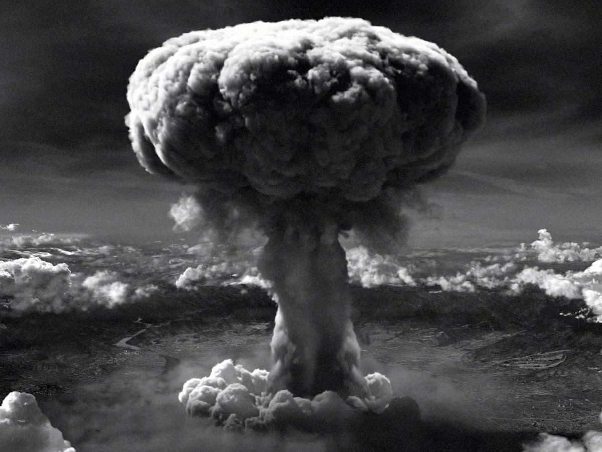

Los bombardeos atómicos de Hiroshima y Nagasaki (en inglés, atomic bombings of Hiroshima and Nagasaki; en japonés, 日本への原子爆弾投下, lit., «caída de bombas atómicas en Japón») fueron ataques nucleares ordenados por Harry S. Truman, presidente de los Estados Unidos, contra el Imperio del Japón. Los ataques se efectuaron el 6 y el 9 de agosto de 1945, respectivamente, lo que contribuyó, junto con la Guerra soviético-japonesa, a la rendición de Japón y el fin de la Segunda Guerra Mundial. Después de seis meses de intenso bombardeo de otras 67 ciudades, el arma nuclear Little Boy fue soltada sobre Hiroshima el lunes 6 de agosto de 1945, seguida por la detonación de la bomba Fat Man el jueves 9 de agosto sobre Nagasaki. Entre 105 000 y 120 000 personas murieron y 130 000 resultaron heridas. Hasta la fecha, estos bombardeos constituyen los únicos ataques nucleares de la historia.
Nube de hongo

Se estima que, hacia finales de 1945, las bombas habían matado a 166 000 personas en Hiroshima y 80 000 en Nagasaki,7 totalizando unas 246 000 muertes, aunque solo la mitad falleció los días de los bombardeos. Entre las víctimas, del 15 al 20 % murieron por lesiones o enfermedades atribuidas al envenenamiento por radiación.8 Desde entonces, algunas otras personas han fallecido de leucemia (231 casos observados) y distintos cánceres (334 observados) atribuidos a la exposición y a la radiación liberada por las bombas.9 En ambas ciudades, la gran mayoría de las muertes fueron de civiles.
Seis días después de la detonación sobre Nagasaki, el 15 de agosto, el Imperio de Japón anunció su rendición incondicional a los «Aliados», haciéndose formal el 2 de septiembre con la firma del acta de capitulación. Con la rendición de Japón, concluyó la guerra del Pacífico y, por tanto, la Segunda Guerra Mundial. Como consecuencias de la derrota, el Imperio nipón fue ocupado por fuerzas aliadas lideradas por los Estados Unidos —con contribuciones de Australia, la India británica, el Reino Unido y Nueva Zelanda— y adoptó los «Tres principios antinucleares», que le prohibían poseer, fabricar e introducir armamento nuclear.